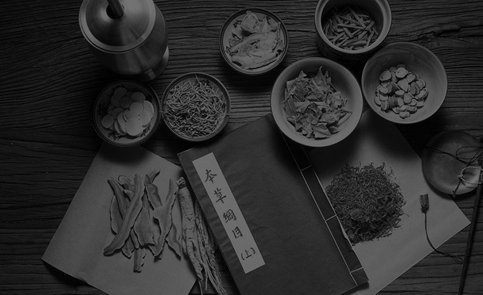
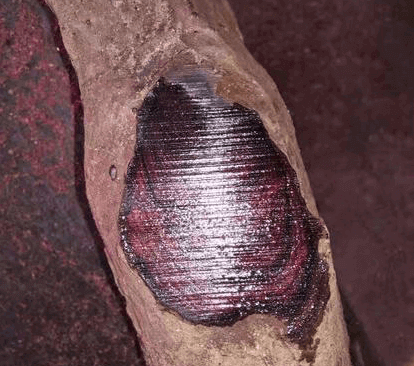
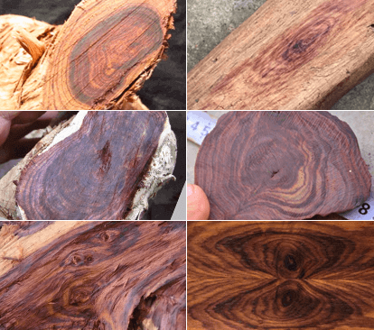

海南黄花梨
从明朝开始，到嘉庆以后海黄急剧减少，且成材速度非常慢，制作大件家具至少需要500年以上的原木。 据了解，上世纪80年代前，海黄曾作为药用消耗了60%以上；上世纪80年代末到2000年国内家具消耗量剧增，所以近十来年所剩的原材料已经濒临枯竭。
千金难求
海黄的稀缺性已是有目共睹，物以稀为贵为其一。 明清宫苑海黄盛行，将其视为名士生活的一种重要标志。帝王贵胄读书怡情、行乐坐卧无不以它为伴，彰显身份地位。 在现代，不论是高玩收藏家还是投资人，都印证海黄作为传世之品，它的收藏永远不缺市场，而且价值无法估量。 既有“古”之历史年代，又有“今”之稀有之珍贵。作为中国悠久历史文化的产物，海黄已成为华夏文明不可或缺的文化因素。
传世藏品
海黄与宗教的缘分是与生俱来的，被认为是唯一能通三界的香气而着称。其坚忍与敦厚，修得百年风霜而立根不动，气味美好，能袪除种种不净。自古以来，就被世界五大宗教共同认同的稀世珍宝。
宗教之缘
海黄的价值离不开它的药用性，一直以来被医学界奉为至宝，古今医书都有记载其独特的医药功效。 《本草纲目》：“疗折伤、金疮，止血定痛，消肿生肌.” 《海药本草》：“诸天行时气宅舍怪异，并烧之有验” 《本草汇言》：“治天行疫疠，瘟瘴灾疾。” 《得配本草》：“入血分而降气，治怒气而止血。” 《本草再新》：“治一切表邪，宣五脏郁气，利三焦血热。”

用者长寿
识。海南黄花梨

“上瘾”香
时有时无 久远留香海黄的香味让人上瘾的就是它那只能想象，无法诠释清楚。雨天浓些，晴天较淡，香味缠身，过去很久不时的还会飘来阵阵熟悉的香味，这也是海黄的神秘诱人之处。

“变脸”纹
波谲云诡 万种风情鬼脸，鬼眼，狐狸脸，婴儿面，老人头，麦惠纹，虎皮纹，蟹脚纹，蜘蛛脚，山水纹，竹丝纹等纹路都可能出现在海黄上，甚至有些老料少出花纹，这种朦胧又多变也是海黄的魅力。
“极品”材
独有手感 极品神韵海黄的质感是一般红木难以比及，其婴儿面般的触感一直让行家与藏家流连忘返。老料则随岁月的沉淀还会形成半透明琥珀质感，温润如玉。且绝大数海黄比较容易打磨出荧光，那是带有紫红色纹路借助光线形成的紫光。
辩。海南黄花梨
“海黄”“越黄”之分
- 1味觉： 海南黄花梨气味自然幽深，降香味鲜、回味清新，闻之上瘾。越南黄花梨香气中夹杂酸味，甚至辛辣刺鼻。
- 2视觉： 海南黄花梨以金黄色为主色，伴有黄、紫、黑、红、褐等多色组合，而越南黄花梨大部分是黄色，偏浅，且中间时夹紫药水般颜色。
- 3纹路：海南黄花梨的鬼脸纹路虽然形状特殊奇异，变幻莫测，但整体纹路规律稍显清晰细腻，整体画面如同中国水墨画一般意境高深。越南黄花梨纹路则显僵硬，纹路中心通常是空的，只有圈圈纹路。
“油梨”“糠梨”之分
油梨
- 也叫油格或许油料，质感强，毛孔小，是海南岛西部山上长的树，由于地皮瘠薄，生长速率很慢，但质地坚固、精致。一眼看去冥冥中一股贵族之气从东而来，内涵的质感让人时而忘乎所以，时而让人飘飘欲仙。特点：颜色较深、比严重，密度好，油性强。
- 特点：颜色较深、比严重，密度好，油性强。
- 颜色：主要是深褐色，紫色，有些靠近黑色。
- 产地：产于海南的西部，比如昌江，乐东，白沙一带。
糠梨
- 又叫黄梨或糠格，纹理壮丽，鬼眼迷离，由于地皮肥美、生长速率较快，但质地偏软且不如油梨精致。糠梨做的珠子比较合适长期盘玩和佩带，因糠梨珠子颜色比油梨浅，珠子盘玩的流程中颜色会不经意的加深，且会出现荧光，晶莹剔透。
- 特点：颜色较浅，比重和密度稍差，油性也稍差。
- 颜色：主要是浅黄、金黄、浅褐色和红褐色居多。
- 产地：产于海南的东部和东北部，比如三亚，海口一带。
一键预约，找老毛聊一聊，到工厂看一看以下均为必填，方面我们更好地为您服务！
2018-4-8 18:11:17 李先生 北京 158****9526 已预约